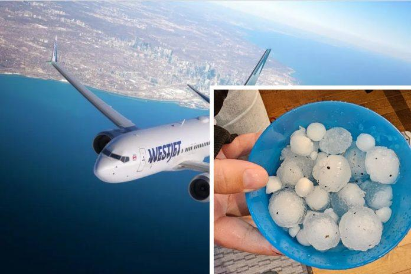
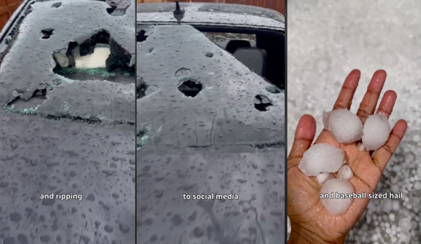
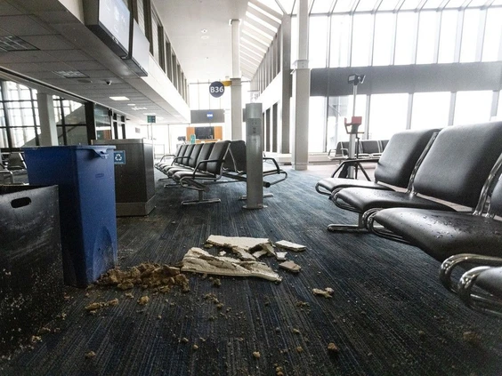
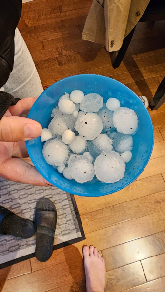

总部位于卡加利的西捷航空（WestJet）表示，自冰雹周一（5日）袭击该市后，有16架西捷航空的飞机（占其整个机队的10%）需要“大修”，导致众多航班取消。
西捷航空在周三（7日）晚间发给客户的一封电子邮件中表示，经过全面的安全评估，该航空公司的团队已确定16架飞机需要进行维修和检查才能重新投入使用。
截至周三，这家总部位于卡加利的航空公司有22架飞机停在地面，其中4架被转移到机库进行保护，9架被迫改道，两架因轻微损坏而被清理。
该航空公司表示，自周一的风暴以来，已有248趟航班被取消，周三取消84趟航班，周二取消106趟航班，周一取消58趟航班。
该公司补充说，随着飞机退出服务，运力也会相应减少，不可避免地导致整个网络的航班进一步延误和取消。
西捷航空总裁兼集团首席运营官佩恩(Diederik Pen)表示：“西捷航空的全体员工对于今年夏天再次扰乱我们尊贵客人的旅行计划感到非常失望，非常感谢你在未来几天里的耐心和理解，因为我们将度过这场重大风暴带来的影响。”
该航空公司鼓励那些即将展开旅行计划的旅客，在旅行前检查航班状态，并查看其乘客更新页面以获取最新资讯。
受影响航班的乘客将收到电子邮件通知，并获得线上自助服务选项。
“我们认识到，虽然这场风暴影响了我们的运营，但我们的许多员工和客人的个人财产也遭受了损失。对于那些直接面临这一问题的人，我们理解这是一个充满挑战的时期，我们希望你们一切都好。”



周一晚上（5日），严重的雷暴袭击了卡加利，倾盆大雨和大冰雹损坏了房屋和其他建筑物，其中包括卡加利国际机场（YYC）。
@cbccalgary There will be some assessment of the damage on Tuesday from a storm that brought intense hail and rainfall through Calgary and other parts of the province. #hail #storm #calgary ♬ original sound – CBC Calgary
卡加利国际在社群媒体上发帖称：“我们可以确认YYC航站楼因冰雹和强降雨而受损。”“为了所有客人和工作人员的安全，B登机口和部分C登机口因水灾而被疏散。”
加拿大环境与气候变迁部(ECCC)表示，周一下午和晚上，亚省南部地区出现严重雷暴并向东移动，产生严重且具破坏性的冰雹、强风和大雨。
ECCC表示，已收到了许多关于卡加利冰雹破坏的报告，冰雹大小达到鸡蛋大小，并伴随局部洪水。
图：WestJet/@CDAinsworth/X
V6